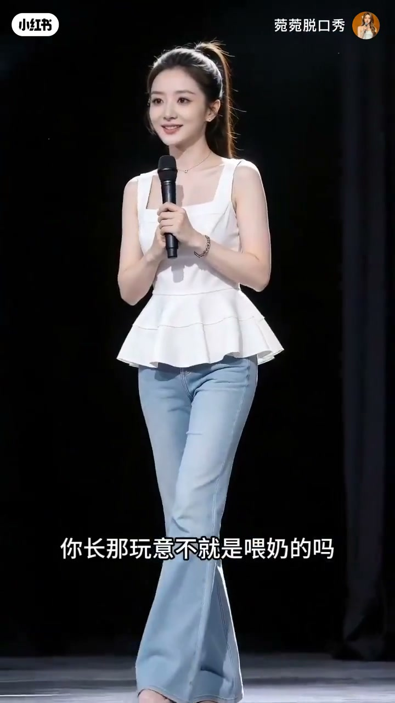
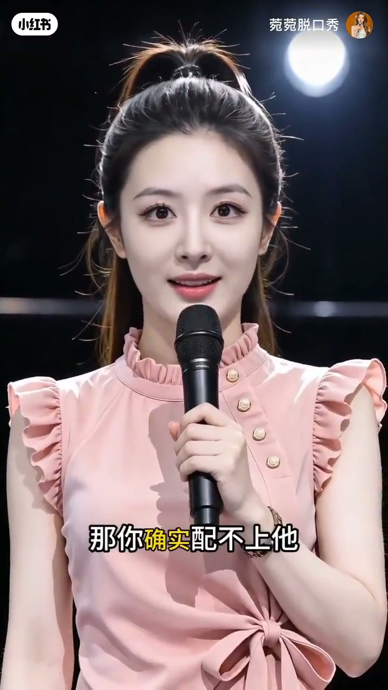
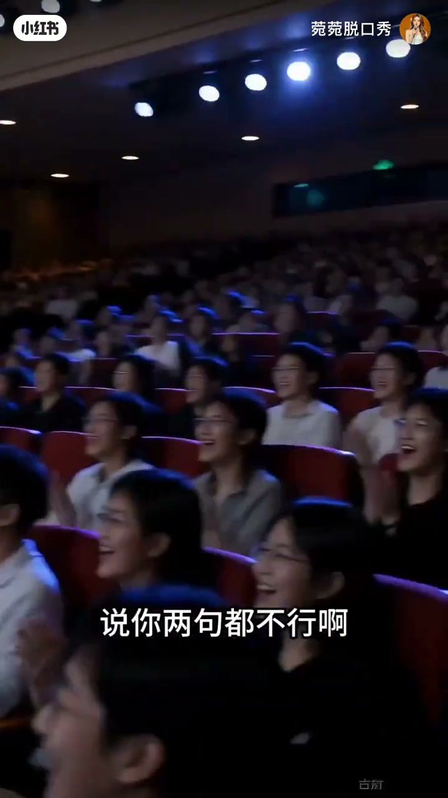

内容要点
知识结构
[00:00→00:25]
开场狠话
字幕「自己死了自己埋哈」「你长那玩意不就是喂奶的吗」——家庭育儿话题被怼到台上。
[00:25→01:10]
改嫁与配不上
惊讶特写配「改什么改嫁吗」；粉衣造型抛出「那你确实配不上他」「我又没有狗粮追我干嘛」。
[01:10→01:50]
观众与借钱
切到观众席大笑鼓掌，字幕「说你两句都不行啊」；再回台上「就这点钱你都不愿意借」。
[01:50→02:32]
嘴碎收束
近景吐槽「你嘴碎可以缝吗哈哈」「你也别介意」，以轻松收场。
总结
这是金句合集而非完整单场：节奏靠字幕包袱与观众反应推进，适合当段子速览。
Whisper 仅捕捉到开头少量繁体碎片与末尾拖音；章节与图注以片内字幕、画面为准，不伪造完整口播。
图文实录
开场：自己生的自己带
00:00 – 00:25
白衣高马尾造型站上舞台，开场字幕就是狠话：「自己死了自己埋哈」。Whisper 碎片「你自己生的自己带」「阿姨」与「那照您这么说」对得上——像在跟长辈抬杠育儿责任。
自己死了自己埋哈
你自己生的自己带
[00:05] 开场字幕：自己死了自己埋哈
Opening subtitle: if you die, bury yourself

[00:20] 字幕：你长那玩意不就是喂奶的吗
Subtitle: isn't that thing just for breastfeeding
改嫁惊吓与相亲吐槽
00:25 – 01:10
近景瞪大眼，前景隐约有白发观众，字幕「改什么改嫁吗」——反应戏把包袱炸开。随后换粉衣造型，连续抛出「那你确实配不上他」「我又没有狗粮追我干嘛」，把恋爱/相亲话术拧成段子。
改什么改嫁吗
那你确实配不上他
我又没有狗粮追我干嘛

[00:50] 字幕：那你确实配不上他
Subtitle: then you really don't deserve him
观众笑声与借钱嘴碎
01:10 – 02:32
镜头切到红座椅观众席，众人鼓掌大笑，字幕「说你两句都不行啊」——用笑声证明包袱落地。回到台上继续金钱与嘴碎话题：「就这点钱你都不愿意借」「你嘴碎可以缝吗哈哈」，末尾以「你也别介意」轻松收住。
说你两句都不行啊
就这点钱你都不愿意借
你嘴碎可以缝吗哈哈

[01:20] 观众反应镜头：说你两句都不行啊
Audience reaction: can't even say a couple words to you
[01:50] 字幕：你嘴碎可以缝吗哈哈
Subtitle: can that chatty mouth be sewn shut, haha